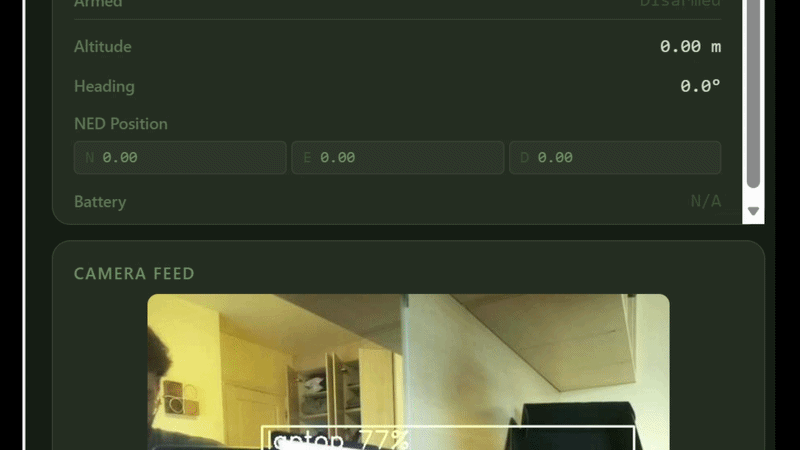
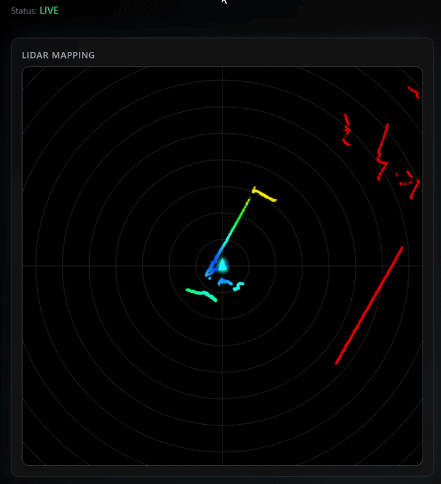
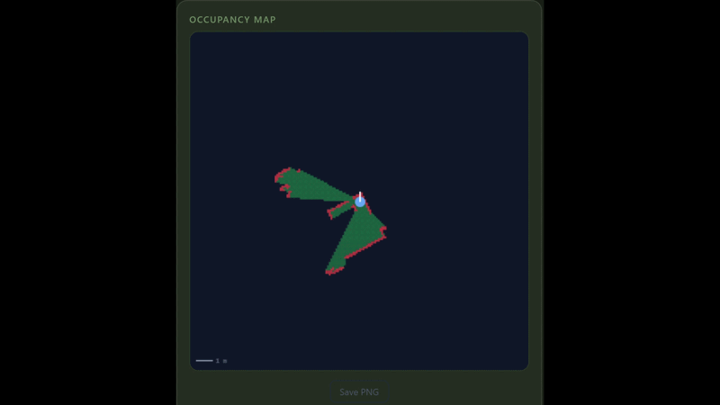
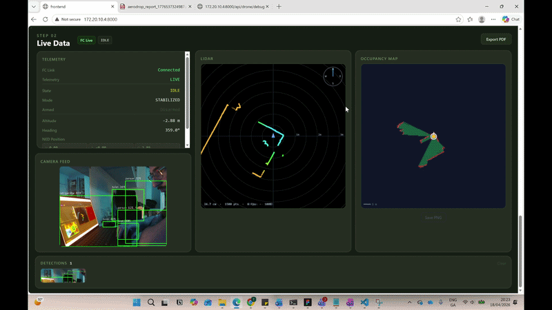
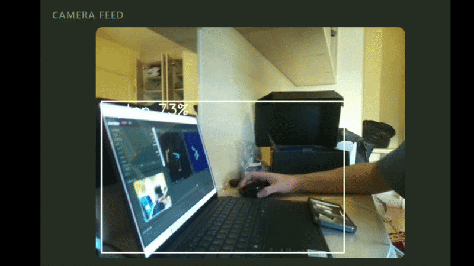
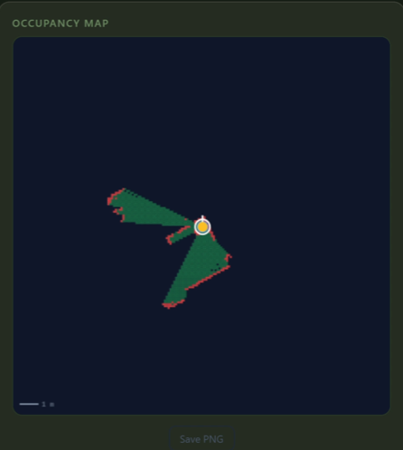

This page documents the results of the AeroDrop final year project. Each section covers a specific subsystem with video and visual evidence of it working. The project spans autonomous flight control, real-time LiDAR mapping, onboard AI detection, and a live web dashboard, all built and tested on physical hardware.
Overview
AeroDrop is a custom-built autonomous indoor quadcopter designed for GPS-denied search-and-rescue. A mission is launched entirely from a browser: the drone arms, takes off, sweeps a defined area in a lawnmower pattern while building a live LiDAR map, detects objects on the ground using an onboard AI camera, navigates to the detection, delivers a payload, then returns home. No manual input is required from launch to landing. The system runs on a Raspberry Pi 4 companion computer bridged to an ArduCopter 4.6.3 flight controller over MAVLink, with EKF3 providing position estimation through optical flow and time-of-flight altitude sensing rather than GPS.
Full mission run or best available combined clip The closest thing you have to a complete run. If you only have fragments, string together: arm and takeoff, the scan pattern in progress, a detection being logged, and landing. Even 60 seconds covering two or three of these steps tells the story.
01 · Flight Control
The flight brain is a Python state machine with eight states: IDLE, PREFLIGHT, TAKEOFF, NAVIGATE, APPROACH, DELIVER, RTH, and LAND. An EMERGENCY state is reachable from anywhere in the graph. Every transition checks live telemetry before proceeding, so the drone will not advance to a state it cannot safely be in. Once a mission starts, no further input is needed.

02 · Environment Sensing
The LD06 LiDAR streams 360-degree point cloud data at 10 Hz over serial. Each scan is ray-cast onto a 20 by 20 metre occupancy grid at 0.2 m per cell and pushed to the dashboard over WebSocket. The A* planner routes around occupied cells in real time. If any object enters within 0.45 m, the offboard executor holds position automatically until the path is clear.


03 · Ground Control
A React web dashboard gives full real-time visibility into the mission. Three WebSocket streams run at once: telemetry at 5 Hz, map at 2 Hz, and LiDAR at 10 Hz. Controls are state-gated, meaning you cannot arm if sensors are not ready, and you cannot issue a goto command unless the drone is already airborne.

04 · Onboard AI
The Sony IMX500 runs MobileNet SSD on the sensor's own neural processor, so inference never loads the RPi CPU. Each detection is stamped with NED coordinates derived from the drone's current pose and written to a thread-safe log. Detections appear as pins on the occupancy map. When a Locate task is active, the drone redirects to the first confirmed detection automatically.


05 · Physical Build
All compute runs on a Raspberry Pi 4 bridged to a Matek H7A3-Slim flight controller over UART via MAVProxy. EKF3 fuses optical flow from a Matek 3901-L0X and time-of-flight altitude for GPS-denied position hold. The LD06 LiDAR and IMX500 camera each connect on their own serial interfaces.
Assembled drone Overhead or three-quarter shot with frame, motors, RPi, and sensor stack all visible. Clean background if possible.
Stable indoor hover without GPS Short clip of the drone hovering indoors. Ten seconds of stable altitude hold via EKF3 optical flow is solid evidence on its own.
Companion computer and wiring stack RPi 4, Matek H7A3-Slim, Matek 3901-L0X, and UART connections. Does not need to be tidy, just shows the real hardware.
06 · Output
When a mission ends, the dashboard generates a PDF report with one click. It includes a mission header, the full task list, a table of every detection with NED coordinates and confidence scores, and the occupancy map image captured at landing.
Generated PDF, full page view The exported PDF open in a viewer. Header, task list, detection table, and occupancy map image should all be visible.
In-app detections list Live detections sidebar in MissionView showing timestamped entries with class labels, confidence, and NED coordinates.